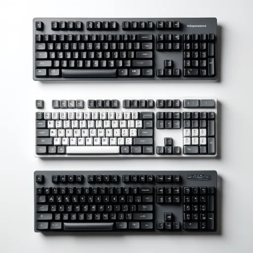
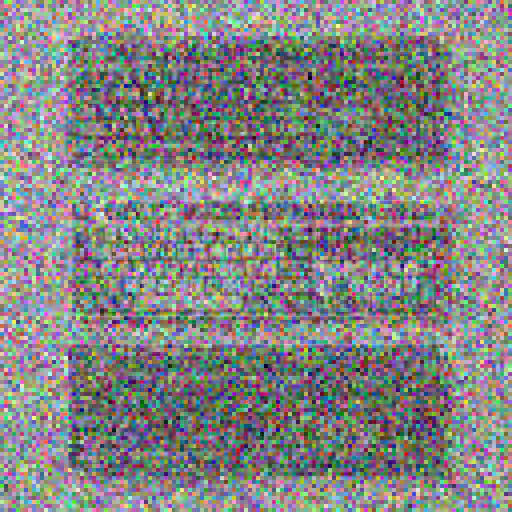
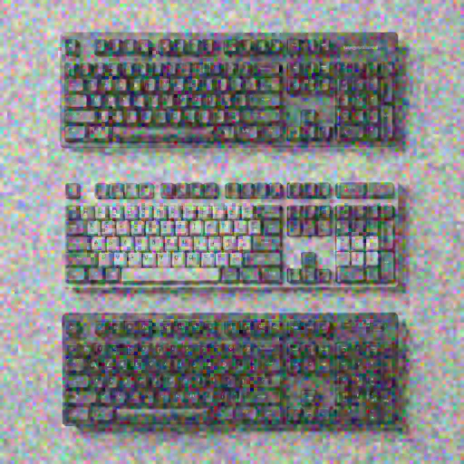
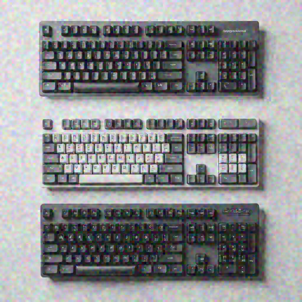

Flow Model Post-Training as Representation Distribution Matching
FlowRDM uses reward scores to post-train flow models for visual generation and embodied control. Higher-reward samples guide the update in feature space.
a photo of a white banana and a black elephantSame prompt and noise, SD3.5-Medium.
1EPFL2NVIDIA3KE:SAI4Stanford University
Read the abstract
Flow models are often post-trained with non-differentiable rewards. Most methods weight samples independently or move a group along one mean direction, ignoring the relations among samples. We propose FlowRDM, a unified framework that formulates flow-model post-training as representation distribution matching (RDM). It matches samples to their reward-weighted distribution in feature space, letting high-reward samples guide updates without reward gradients. In embodied control, it compares actions sampled at the same visited state. Across diverse tasks and base models in visual generation and embodied control, it matches or surpasses state-of-the-art methods. On SD3.5-Medium and FLUX.1-dev, it raises total reward by 59.7% and 14.1% over the respective base models, outperforming DiffusionART and DiffusionNFT on total reward and two reward models excluded from training. Post-trained on simulated videos alone, Cosmos3-Super and Cosmos3-Nano score 67.8 and 63.7 on Physics-IQ Verified. In closed-loop driving, it improves the base policy’s distance per at-fault event by 45.5%. In humanoid motion tracking from scratch, it surpasses FPO++ and Gaussian PPO on all seven motions with 33% fewer environment steps.
Results
Text-to-image
Total reward rises 59.7% over the SD3.5-Medium base model.
With four rewards at once, FlowRDM reaches a higher total reward than DiffusionART and DiffusionNFT on both models.
The rewards are GenEval, PickScore, CLIPScore and HPSv2.1, with equal weights; the total reward is the sum of the four normalized scores. On SD3.5-Medium it rises from 2.0136 to 3.2149 after 500 updates, 128 GPU hours, and on FLUX.1-dev from 2.8031 to 3.1983. FlowRDM also scores highest on ImageReward and UnifiedReward, two reward models excluded from training.
Same prompt and noise: SD3.5-Medium and three post-trained models
“a photo of two pizzas”
total reward 1.80
total reward 1.83
total reward 1.88
total reward 3.25
“a photo of a white banana and a black elephant”
total reward 2.10
total reward 2.57
total reward 2.49
total reward 3.34
Sampled without classifier-free guidance. The three post-trained models after 500 updates.
2,212 evaluation images. The curves start at the base model’s 2.014, below the axis.
+59.7%
total reward over SD3.5-Medium, from 2.0136 to 3.2149
+14.1%
total reward over FLUX.1-dev, from 2.8031 to 3.1983
Text-to-video
A vision-language judge prefers FlowRDM to Wan2.2 in 78% of 256 pairs.
A blind vision-language judge prefers the post-trained Wan2.2 in 78% of 256 pairs.
Wan2.2 is post-trained at its release setting, 121 frames at 1280 × 704, on the prompts of Movie Gen Video Bench, with HPSv3 and the text alignment of VideoReward as the reward. For 128 held-out prompts and two seeds, a vision-language model, GPT-6-Astra, sees the base model’s video and the post-trained model’s video in random order and names the better one. After 24 updates, the judge prefers FlowRDM in 78% of the 256 pairs.
Same prompt and seed, before and after post-training
“A serene meadow filled with wildflowers and butterflies.”
“bears figure out how to launch a rocket”
“a red panda and a toucan are best friends taking a stroll through santorini during the blue hour”
1280 × 704, 121 frames: vision-language judge, GPT-6-Astra
78%
of 256 pairs: the vision-language judge prefers FlowRDM to Wan2.2
Visual quality 87%, motion 65%, text alignment 70%.
100 prompts excluded from training. FlowRDM passes DiffusionART’s final reward after 105 GPU hours.
World model
Cosmos3-Super rises from 65.5 to 67.8 on Physics-IQ Verified.
Post-trained on simulated videos alone, Cosmos3-Super reaches 67.8 and Cosmos3-Nano 63.7 on Physics-IQ Verified.
Cosmos3 continues a three-second input video for five seconds, and Physics-IQ scores the continuation against the real one. The training set is 336 simulated rigid-body clips from the physical interaction scenes released with Cosmos3, with no video or prompt of the benchmark, and the reward of a sample is the benchmark’s score against the simulated continuation of its clip. The base models’ publicly reported scores are 65.5 and 61.8.
On a real scene: a three-second clip, continued for five seconds
score 60.7
score 73.9
The clips play the first two seconds of the continuation twice, then the first second, and hold. Scores: Physics-IQ Verified on the whole five seconds.
Physics-IQ Verified, before and after post-training
Cosmos3-Super
65.5publicly reported, 67.8+ FlowRDM
Cosmos3-Nano
61.8publicly reported, 63.7+ FlowRDM
Cosmos3-Super post-trained with FlowRDM, next to the four highest public entries of the leaderboard on 20 October 2026 (grey). The Cosmos3 and Odyssey entries, ours included, take one of eight samples per item, chosen with a reward model or by consensus; FLUX 3 [large] reports a best-of-N selection.
Closed-loop driving
Distance per at-fault event rises from 1.89 to 2.75 km.
In closed loop, the distance per at-fault event rises by 45.5%, from 1.89 to 2.75 km.
The policy is an Alpamayo-like vision-language-action policy with 2B parameters. Its trajectory head, a flow-matching expert, is post-trained with the backbone frozen, on states shortly before closed-loop failures in simulation. On 441 held-out scenarios the driving score (mean route progress, zero for a failed scenario) rises from 0.840 to 0.879.
Two held-out scenarios that the base policy fails and FlowRDM passes
Front camera of the base policy, with both paths over the next 4 s:base policyFlowRDMTop view:other road users
Distance per at-fault event, 441 held-out scenarios
base policy (2B), 1.89 km
+45.5%
distance per at-fault event over the base policy
From 1.89 to 2.75 km. Flow-GRPO, FPO++ and DiffusionNFT, trained on the same scored plans, stay near the base policy.
Manipulation
Square success rate reaches 64% against the 54% reported for FPO++.
FlowRDM matches or outperforms FPO++ on five tasks, with 0.64 success on Square against 0.54.
Each task starts from an image-based flow-matching policy pretrained on demonstrations. FlowRDM runs the released FPO++ training loop and replaces its policy loss: at each state the policy draws nine action chunks and executes one, which receives its advantage estimate; the other eight receive zero and need no environment steps. The policy’s samples at that state then move toward the executed chunk when its advantage is positive and away from it when it is negative.
From the same initial state, before and after post-training
Can
Box Cleanup
Threading
The clips show the first 9.6 s of each episode in real time.
The fine-tuning suite of FPO++
| Task | Steps | FPO++, reported | FPO++, re-run | FlowRDM |
|---|---|---|---|---|
| Can | 5.0M | 0.95 | 0.939 ± 0.003 | 0.986 ± 0.001 |
| Square | 8.0M | 0.54 | 0.550 ± 0.002 | 0.637 ± 0.008 |
| Box Cleanup | 5.0M | 1.00 | 0.994 ± 0.005† | 1.000 ± 0.000 |
| Tray Lift | 4.3M | 0.95 | 0.932 ± 0.007 | 0.937 ± 0.009 |
| Threading | 8.0M | 0.89 | 0.852 ± 0.020 | 0.923 ± 0.012 |
FlowRDM is higher on Can, Square and Threading; on Box Cleanup and Tray Lift the two are level. Success rate of the in-training evaluation over the last 40% of the steps, with the standard error over three seeds. Reported: the mean curve of the FPO++ paper over the same window. †The evaluations of these runs end at 77 to 87% of the range.
FlowRDM: mean and range of three seeds. The other curves are the mean curves reported in the FPO++ paper.
0.64
success rate on Square,
0.54 reported for FPO++
Mean over the last 40% of training and three seeds.
Humanoid motion tracking
FlowRDM exceeds both baselines on seven motions with 33% fewer environment steps.
In training from scratch, FlowRDM surpasses FPO++ and Gaussian PPO on all seven motions with 33% fewer environment steps.
The Unitree G1 tracks seven motions of LAFAN1 in the BeyondMimic environment, with one policy per motion trained from scratch. After 197M environment steps, the zero-noise evaluation return of FlowRDM is above the 295M-step return of FPO++ and Gaussian PPO on every motion.
Seven motions, one policy each, trained from scratch with FlowRDM for 197M steps
After 197M steps, FlowRDM is above both baselines at 295M
Lines: training return, three seeds. Circles: zero-noise evaluation. Dotted: FlowRDM’s evaluation at 197M steps, carried across to 295M.
33%
fewer environment steps to surpass FPO++ and Gaussian PPO on all seven motions: 197M against 295M
Method
FlowRDM samples a group of outputs for the same prompt or state and scores each one. In feature space, it matches the group to a version weighted by those rewards. This gives each sample a direction for the update.
aA group and its rewards
“a photo of three computer keyboards”FLUX.1-dev

reward of each sample, mean 2.62
One prompt or one visited state, sampled several times by the current model: a group. The reward scores each sample. Reweighting the same samples by reward gives the target.
bFeatures from a frozen copy of the model
A frozen copy of the model reads each sample, and its hidden states are the features. Features decide which samples count as near; in learned features, near samples share content.
cMatching in these features
Matching the group to its target gives each sample a direction: the descent direction, at that sample, of the discrepancy between the two, here the maximum mean discrepancy (MMD). With a Gaussian kernel, each sample gets its own, toward nearby samples with above-average reward and away from nearby samples with below-average reward.
A larger disc has more weight in the target; the shading is warm where the target has more weight than the group and cool where it has less. The model is then fit by regression to move its samples along these directions.
The three formulas
- The target
- The distribution of the current model, reweighted by reward.
- The direction
- The witness of the maximum mean discrepancy between a group and its reward-weighted group, and its gradient at each sample. Rewards enter only through the centered weights, so no reward gradient is needed.
- The update
- At cached points of each sampling trajectory, the network regresses toward the velocity of the current model, shifted against gi: the direction di carried back from the features to the sample.
How the settings vary by task
| Discrepancy | Representation | Group | |
|---|---|---|---|
| Text-to-image | MMD, Gaussian kernel | generator features | K samples per prompt |
| Text-to-video, world model | MMD, Gaussian kernel | latents, generator features | K samples per condition |
| Driving | MMD, linear kernel | Frenet coordinates | K executed plans per state |
| Manipulation, humanoid | MMD, linear or degree-two kernel | action (chunk) | K samples, one executed |
With a linear kernel on latents, the matching gives the direction of DiffusionART and, with rank weights, the preference field of DrPO for one-step generators.
Background on reward-based post-training
Post-training raises a reward that gives a score but no direction.
A flow model generates a sample by integrating a learned velocity field from Gaussian noise to data. It is often post-trained with a reward that is not differentiable: an object detector checks whether an image shows the prompted objects, and a simulator checks whether a policy completes its task.
From noise to a sample, and the score that the reward gives it



reward
3.01
“a photo of three computer keyboards”, FLUX.1-dev. The path is sketched in pixel space. The reward sums an object detector’s check of the prompt and three learned scorers.
Two widely used approaches turn these scores into updates
DiffusionNFT and policy gradients such as Flow-GRPO weight samples this way. Numbers: reward minus the mean reward.
DiffusionART moves the samples from their mean (ring) toward their reward-weighted mean (dot).
In the first approach, the samples of a prompt do not interact. In the second, they interact only through their mean. Neither uses the relations among samples.